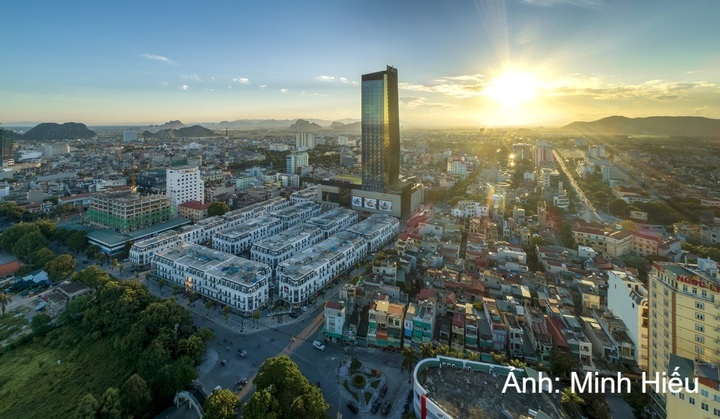
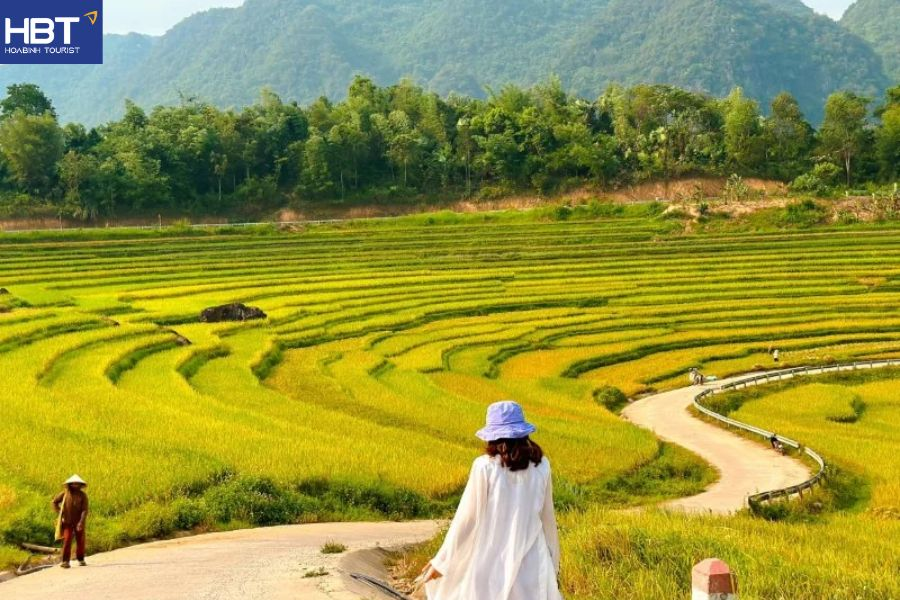
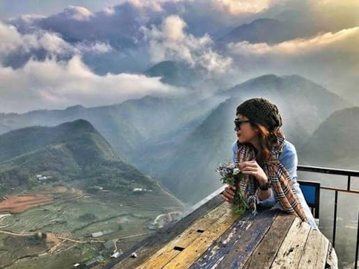
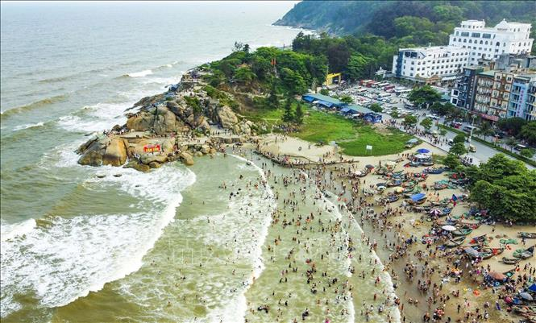
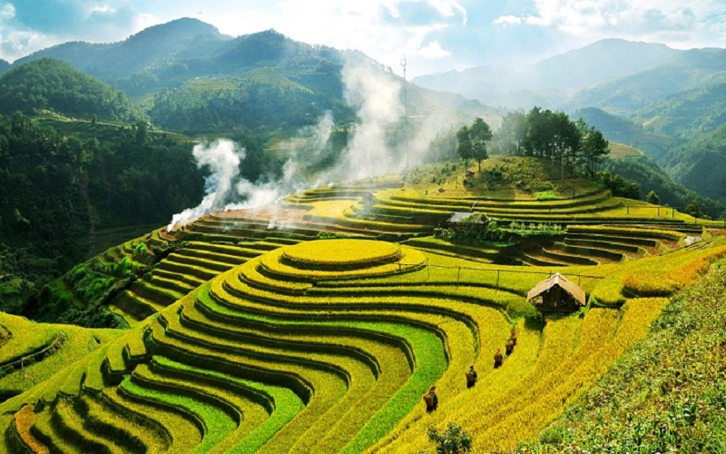
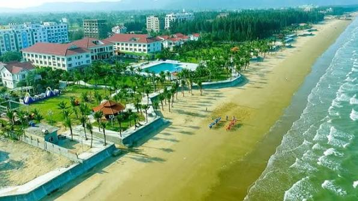
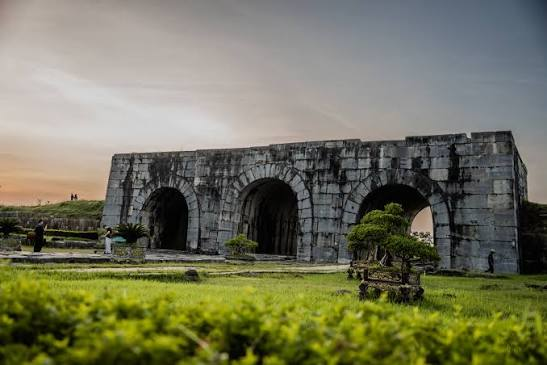
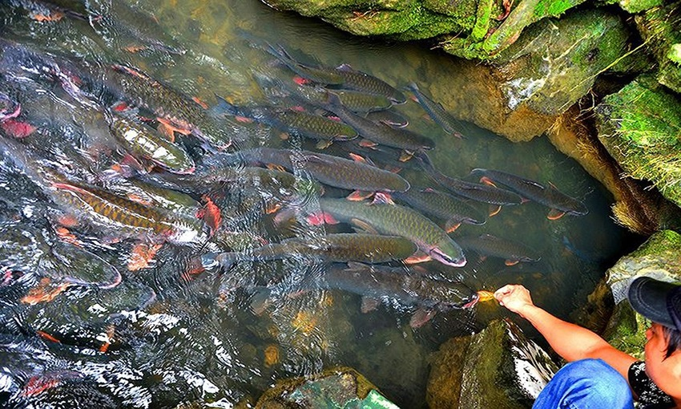

Thanh Hóa sở hữu nguồn tài nguyên du lịch phong phú, đa dạng, kết hợp hài hòa giữa yếu tố sinh thái thiên nhiên, di sản văn hóa - lịch sử lâu đời và hệ thống hạ tầng du lịch biển nghỉ dưỡng ngày càng hoàn thiện. Hệ thống không gian du lịch của tỉnh được định hình rõ nét qua bốn hành lang phát triển trọng điểm: Thứ nhất, dải du lịch biển nghỉ dưỡng cao cấp gắn với các đô thị duyên hải như Sầm Sơn, Hải Tiến, Hải Hòa và vùng biển đảo Nghi Sơn; Thứ hai, không gian du lịch sinh thái, văn hóa bản địa và nghỉ dưỡng trải nghiệm tại vùng núi phía Tây với các hạt nhân như Pù Luông, Bến En và suối cá thần Cẩm Lương; Thứ ba, tuyến du lịch văn hóa - lịch sử - tâm linh kết nối các di sản tầm cỡ quốc gia và thế giới bao gồm Di sản Văn hóa Thế giới Thành Nhà Hồ, Khu di tích quốc gia đặc biệt Lam Kinh và thắng cảnh Hàm Rồng; Thứ tư, chuỗi du lịch trải nghiệm làng nghề truyền thống gắn liền với ẩm thực xứ Thanh đặc sắc. Sự hội tụ của các không gian này không chỉ khẳng định vị thế Thanh Hóa là một "Việt Nam thu nhỏ", mà còn tạo tiền đề quan trọng để bứt phá trở thành một trong những trung tâm du lịch lớn của vùng Bắc Trung Bộ và cả nước.
Thanh Hóa khẳng định sức hút đặc biệt đối với du khách nhờ sự hội tụ hiếm có của đa dạng loại hình địa hình và trải nghiệm: từ không gian sôi động, hiện đại của các đô thị biển duyên hải vào buổi sáng, tìm về chốn tĩnh lặng phản chiếu chiều sâu lịch sử nơi các di sản cổ kính vào buổi chiều, cho đến không gian sinh thái nguyên sơ, trong lành của đại ngàn phía Tây vào ngày hôm sau. Sự chuyển tiếp nhịp nhàng giữa Biển - Di sản - Đại ngàn không chỉ tạo nên tính đa dạng trong hành trình trải nghiệm mà còn khẳng định vị thế của Thanh Hóa như một "Việt Nam thu nhỏ".

Bên cạnh sức hút từ cảnh quan thiên nhiên, du lịch Thanh Hóa còn khẳng định lợi thế cạnh tranh nhờ lòng hiếu khách của người dân địa phương và nền văn hóa ẩm thực bản địa giàu bản sắc. Những sản vật và món ăn truyền thống như nem chua, chả tôm nướng, bánh răng bừa hay vịt Cổ Lũng không chỉ mang dấu ấn văn hóa đặc trưng mà còn tạo nên trải nghiệm ẩm thực độc đáo cho du khách. Đồng thời, với khung giá dịch vụ hợp lý và cấu trúc sản phẩm đa dạng, hạ tầng du lịch Thanh Hóa đáp ứng hiệu quả nhu cầu của nhiều phân khúc thị trường, từ du lịch trải nghiệm tự túc đến các loại hình nghỉ dưỡng cao cấp.
Mô hình trải nghiệm đa dạng và liên kết không gian: Khả năng tích hợp linh hoạt các hình thức du lịch trong cùng một hành trình, từ nghỉ dưỡng biển duyên hải sôi động tại Sầm Sơn, Hải Tiến; khám phá hệ sinh thái núi rừng nguyên sơ, bảo tồn đa dạng sinh học tại Pù Luông, Bến En; cho đến chiêm bái và tìm hiểu chiều sâu lịch sử tại các di sản tầm cỡ quốc gia và thế giới như Thành Nhà Hồ, Lam Kinh. Sự chuyển tiếp nhịp nhàng này mang lại giá trị trải nghiệm toàn diện và tối ưu hóa thời gian cho du khách.
Tối ưu hóa chi phí và tính đa dạng trong phân khúc dịch vụ: Hệ thống hạ tầng du lịch phát triển hoàn chỉnh với sự đa dạng về loại hình lưu trú (từ homestay bản địa, khách sạn tiêu chuẩn đến các quần thể resort 5 sao), mạng lưới giao thông kết nối thuận tiện và dịch vụ ẩm thực phong phú. Cấu trúc giá cạnh tranh giúp Thanh Hóa dễ dàng tiếp cận và đáp ứng hiệu quả nhu cầu của nhiều phân khúc khách hàng khác nhau, từ du lịch trải nghiệm tự túc đến các dòng khách gia đình và nghỉ dưỡng cao cấp.
Giá trị văn hóa ẩm thực bản địa giàu bản sắc: Nền ẩm thực xứ Thanh là sự kết tinh giữa nguồn nguyên liệu tự nhiên phong phú và bí quyết chế biến truyền thống lâu đời. Du khách có cơ hội thưởng thức chuỗi sản vật nổi tiếng đã trở thành thương hiệu vùng miền như nem chua Thanh Hóa, chả tôm nướng than hoa, bánh răng bừa, vịt Cổ Lũng nướng, cùng nguồn thủy hải sản tươi sống được khai thác trực tiếp từ các bãi biển Sầm Sơn và Nghi Sơn, góp phần gia tăng trải nghiệm văn hóa đa giác quan.
Nhằm khắc phục tính mùa vụ và tối ưu hóa tài nguyên du lịch, chuỗi hoạt động khám phá Thanh Hóa được phân hóa bài bản theo các thời điểm vàng trong năm:
Giai đoạn tháng 5 đến tháng 8 đóng vai trò là mùa cao điểm du lịch biển duyên hải tại Sầm Sơn, Hải Tiến và Nghi Sơn nhờ điều kiện thời tiết nắng vàng, biển êm, đáp ứng trọn vẹn nhu cầu nghỉ dưỡng và trải nghiệm ẩm thực hải sản.
Hai mốc thời gian tháng 5 - 6 và tháng 9 - 10 là thời điểm vàng cho phân khúc du lịch sinh thái tại Pù Luông, khi những thửa ruộng bậc thang bước vào mùa lúa chín vàng óng, kết hợp với khí hậu mát mẻ đặc trưng vùng núi cao rất thích hợp cho nghỉ dưỡng chữa lành (wellness) và trekking.

Giai đoạn từ tháng 11 đến tháng 3 năm sau tận dụng lợi thế thời tiết khô ráo, se lạnh để đẩy mạnh các hành trình du lịch di sản, văn hóa và tâm linh tại Thành Nhà Hồ, Lam Kinh cũng như các cụm di tích lịch sử vùng trung du, tạo dựng bức tranh du lịch phát triển bền vững quanh năm.

Mạng lưới giao thông đường bộ: Nhờ sự hoàn thiện và đưa vào khai thác đồng bộ của tuyến cao tốc Bắc - Nam phía Đông, thời gian di chuyển bằng phương tiện cá nhân hoặc vận tải hành khách chất lượng cao từ Hà Nội về trung tâm tỉnh Thanh Hóa được rút ngắn chỉ còn khoảng 1,5 đến 2 giờ, tối ưu hóa đáng kể khả năng kết nối liên vùng.
Hạ tầng giao thông đường sắt: Tuyến đường sắt xuyên Việt chạy qua hành lang trung tâm địa phương với hạt nhân là Ga Thanh Hóa - một trong những ga trọng điểm trên tuyến Bắc - Nam, cung cấp phương thức vận tải an toàn, ổn định và mang lại trải nghiệm thưởng ngoạn cảnh quan địa hình đặc trưng cho du khách.
Kết nối không lưu đường hàng không: Du khách từ các tỉnh phía Nam và khu vực miền Trung - Tây Nguyên có thể tiếp cận địa phương thông qua các đường bay nội địa thẳng đến Cảng hàng không Thọ Xuân, với tần suất khai thác thương mại đều đặn hàng ngày do các hãng hàng không quốc gia đảm trách.
Với dải bờ biển dài hơn 6 km kéo dài liên tục từ chân dải núi Trường Lệ tới địa phận phường Quảng Cư, bãi biển Sầm Sơn khẳng định vị thế là trung tâm nghỉ dưỡng duyên hải trọng điểm của khu vực. Địa hình bãi biển sở hữu đặc tính tự nhiên ưu việt với dải cát hạt mịn, độ dốc thoải cùng chế độ sóng biển năng động, đáp ứng hoàn hảo các tiêu chuẩn kỹ thuật phục vụ khai thác du lịch tắm biển, thể thao nước và các chuỗi sự kiện giải trí quy mô lớn.

Những trải nghiệm nổi bật: Trải nghiệm tắm biển và vận động dưới nước tại các phân khu bãi tắm A, B, C, D; thưởng ngoạn quần thể di tích danh thắng núi Trường Lệ gắn liền với các công trình kiến trúc tâm linh như Đền Độc Cước, Hòn Trống Mái, Đền Cô Tiên; tham gia chuỗi hoạt động tại không gian dịch vụ - giải trí đô thị ven biển và thưởng thức nguồn thủy hải sản tươi sống chất lượng cao.
Cự ly khoảng cách: Bãi biển Sầm Sơn nằm cách trung tâm TP. Thanh Hóa khoảng 16 km về phía Đông. Từ trung tâm TP. Thanh Hóa / Ga Thanh Hóa: Di chuyển dọc theo trục Đại lộ Lê Lợi (trùng đoạn Quốc lộ 47) về hướng Đông, kết nối vào hành lang giao thông Nam Sông Mã hoặc đường Trần Hưng Đạo để tiến vào trung tâm đô thị biển Sầm Sơn. Thời gian di chuyển trung bình dao động từ 20 đến 30 phút đối với phương tiện cá nhân (ô tô, xe máy) hoặc dịch vụ vận tải hành khách công cộng (xe buýt Tuyến số 01). Từ Cảng hàng không Thọ Xuân: Lưu thông theo trục Quốc lộ 47 về hướng Đông, qua địa phận trung tâm TP. Thanh Hóa đến Sầm Sơn (tổng chiều dài khoảng 50 km). Thời gian di chuyển bằng taxi hoặc dịch vụ xe buýt chuyên tuyến sân bay dự kiến khoảng 60 đến 75 phút. Từ Hà Nội và các tỉnh phía Bắc: Lưu thông theo tuyến cao tốc Bắc - Nam phía Đông (đoạn Mai Sơn - Quốc lộ 45), rẽ tại nút giao Đông Xuân để tiến vào địa phận TP. Thanh Hóa, sau đó tiếp tục di chuyển qua hành lang Quốc lộ 47 trực tiếp tới Sầm Sơn.
Khu bảo tồn Thiên nhiên Pù Luông tọa lạc trên vùng địa hình karst núi đá vôi hùng vĩ với độ cao dao động từ 600 m đến 1.700 m so với mực nước biển. Khu vực này sở hữu hệ sinh thái rừng nguyên sinh phong phú có giá trị đa dạng sinh học cao, kết hợp hài hòa với không gian cư trú lâu đời của cộng đồng các dân tộc Thái, Mường. Sự hiện diện của các quần thể bản làng văn hóa bản địa xen lẫn hệ thống ruộng bậc thang kỳ vĩ đã tạo nên một không gian cảnh quan sinh thái - nhân văn độc đáo, làm nền tảng vững chắc cho việc phát triển các mô hình du lịch xanh, du lịch cộng đồng và nghỉ dưỡng sinh thái bền vững.

Những trải nghiệm nổi bật: Thưởng ngoạn cảnh quan ruộng bậc thang trong mùa lúa chín vàng tại các địa bàn trọng điểm như Bản Đôn, Bản Bang; trải nghiệm mô hình di chuyển bằng bè mảng tre truyền thống trên sông Chăm kết hợp quan sát hệ thống guồng nước (cối xay nước) gỗ đặc trưng; thực hiện các hành trình đi bộ đường dài (trekking) chinh phục đỉnh Pù Luông hoặc thám hiểm địa chất - địa hình tại Hang Kho Mường.
Cự ly khoảng cách: Khu bảo tồn Thiên nhiên Pù Luông nằm cách trung tâm TP. Thanh Hóa khoảng 130 km về phía Tây Bắc và cách thủ đô Hà Nội khoảng 170 km. Từ trung tâm TP. Thanh Hóa / Ga Thanh Hóa: Lưu thông theo trục Quốc lộ 45 qua địa phận các huyện Thiệu Hóa, Yên Định tới thị trấn Cẩm Thủy; tiếp tục rẽ vào Tỉnh lộ 217 đến thị trấn Cành Nàng (huyện Bá Thước), sau đó kết nối sang Tỉnh lộ 15C hướng trực tiếp về không gian du lịch Pù Luông (Bản Đôn / Kho Mường). Du khách có thể tiếp cận bằng tuyến vận tải hành khách cố định (xe khách tuyến TP. Thanh Hóa - Cành Nàng) hoặc phương tiện cá nhân. Từ Cảng hàng không Thọ Xuân: Lưu thông theo Tỉnh lộ 506 kết nối ra Quốc lộ 15, qua địa phận huyện Ngọc Lặc tiến về Bá Thước, sau đó chuyển hướng sang Tỉnh lộ 15C tiến thẳng lên Pù Luông (khoảng cách xấp xỉ 90 km, thời gian di chuyển bằng ô tô ước tính từ 2 đến 2,5 giờ). Từ Hà Nội và các tỉnh phía Bắc: Di chuyển theo hành lang Quốc lộ 6 qua Xuân Mai (Hà Nội) và tỉnh Hòa Bình, chuyển hướng tại khu vực Mai Châu (Ngã ba Bản Lác) vào Tỉnh lộ 15C dẫn xuống không gian du lịch Pù Luông. Đây được đánh giá là tuyến hành lang kết nối tối ưu nhất về cự ly và cảnh quan sinh thái (thời gian lưu thông trung bình khoảng 4 giờ).
Khu du lịch biển Hải Tiến sở hữu tuyến bờ biển dài 12 km trải rộng trên địa bàn các xã thuộc huyện Hoằng Hóa. Trái ngược với không gian đô thị sôi động của Sầm Sơn, Hải Tiến định hình nét đặc trưng bởi vẻ đẹp nguyên sơ, yên bình với những dải rặng phiêu sinh, hàng dừa xanh mát cùng không gian cảnh quan tĩnh lặng.

Những trải nghiệm nổi bật: Thưởng ngoạn cảnh quan bình minh ven biển và tìm hiểu phương thức lao động sản xuất truyền thống (kéo lưới) của cộng đồng ngư dân bản địa vào sáng sớm; khai thác giá trị kiến trúc, cảnh quan tại khu vực Cầu cảng Hải Tiến; kết hợp các tuyến du lịch văn hóa - tâm linh, chiêm bái Chùa Bốt Loại và thăm khu di tích Đền thờ Danh nhân Văn hóa Trạng Quỳnh tại địa phương.
Cự ly khoảng cách: Khu du lịch biển Hải Tiến nằm cách trung tâm TP. Thanh Hóa khoảng 20 km về phía Đông Bắc. Từ trung tâm TP. Thanh Hóa / Ga Thanh Hóa: Lưu thông theo trục Quốc lộ 1A về hướng Bắc khoảng 10 km đến Ngã tư Bút Sơn (thị trấn Bút Sơn, huyện Hoằng Hóa); rẽ phải vào Tỉnh lộ 510 và tiếp tục di chuyển khoảng 10 km thẳng tới dải bờ biển Hải Tiến. Từ Cảng hàng không Thọ Xuân: Di chuyển theo Tỉnh lộ 506 kết nối ra Quốc lộ 1A hướng về phía Bắc đến địa phận huyện Hoằng Hóa, sau đó rẽ vào Tỉnh lộ 510 để tiếp cận bãi biển (khoảng cách xấp xỉ 50 km, thời gian di chuyển bằng taxi hoặc dịch vụ vận tải đường bộ khoảng 60 phút). Từ Hà Nội và các tỉnh phía Bắc: Lưu thông theo tuyến cao tốc Bắc - Nam phía Đông, thoát tại nút giao Gia Mùa (huyện Hoằng Hóa), kết nối ra Quốc lộ 1A tiến về Ngã tư Bút Sơn, sau đó chuyển hướng sang Tỉnh lộ 510 dẫn trực tiếp ra khu du lịch biển Hải Tiến.
Thành Nhà Hồ là công trình kiến trúc quân sự bằng đá độc đáo, được Hồ Quý Ly xây dựng vào năm 1397 dưới triều Trần. Toàn bộ hệ thống tường thành và 4 cổng vòm uy nghi được cấu tạo hoàn toàn từ các khối đá granite kích thước khổng lồ, được kỹ thuật đẽo gọt và ghép nối chính xác tuyệt đối mà không cần sử dụng chất liên kết.

Những trải nghiệm nổi bật: Chiêm ngưỡng Cổng Nam (Cổng Tiền) - công trình kiến trúc đá vòm nguyên vẹn và tráng lệ nhất trong hệ thống thành nội; tham quan Không gian Trưng bày Hiện vật Khảo cổ để tìm hiểu chiều sâu lịch sử - văn hóa triều Hồ; trải nghiệm tuyến xe điện du lịch thăm quan toàn bộ hệ thống Cổng Bắc, Cổng Đông, Cổng Tây và Di tích Đàn tế Nam Giao.
Cự ly khoảng cách: Di sản Văn hóa Thế giới Thành Nhà Hồ tọa lạc trên địa bàn các xã Vĩnh Long và Vĩnh Tiến, huyện Vĩnh Lộc; cách trung tâm TP. Thanh Hóa khoảng 45 km về phía Tây Bắc. Từ trung tâm TP. Thanh Hóa / Ga Thanh Hóa: Lưu thông dọc theo hành lang Quốc lộ 45 qua địa phận các huyện Thiệu Hóa và Yên Định để tiến vào huyện Vĩnh Lộc; không gian di sản nằm trực tiếp trên tuyến Quốc lộ 45. Du khách có thể tiếp cận bằng phương tiện cá nhân hoặc sử dụng dịch vụ vận tải hành khách công cộng qua tuyến xe buýt số 08 (tần suất khai thác liên tục trong ngày). Từ Cảng hàng không Thọ Xuân: Di chuyển theo Tỉnh lộ 506 qua địa phận huyện Yên Định, rẽ sang Quốc lộ 45 hướng về huyện Vĩnh Lộc (tổng chiều dài khoảng 35 km, thời gian lưu thông bằng taxi hoặc xe du lịch ước tính khoảng 45 phút). Từ Hà Nội và các tỉnh phía Bắc: Lưu thông theo tuyến cao tốc Bắc - Nam phía Đông, thoát tại nút giao Hà Lĩnh (huyện Hà Trung), kết nối vào Quốc lộ 217 về hướng Tây khoảng 15 km để tiếp cận trực tiếp quần thể di sản.
Danh thắng tọa lạc ngay dưới chân dãy núi Trường Sinh, nổi tiếng với dòng suối tự nhiên có chiều dài khiêm tốn khoảng 100 m nhưng là nơi trú ngụ của hàng ngàn cá thể cá giốc (thường gọi là cá thần) mật độ cao. Cộng đồng dân cư địa phương tôn vinh đây là đàn cá thiêng mang ý nghĩa tâm linh phong thủy và tuân thủ nghiêm ngặt tập quán bảo vệ, tuyệt đối không đánh bắt.

Những trải nghiệm nổi bật: Quan sát hiện tượng tự nhiên độc đáo của quần thể cá giốc di chuyển từ hệ thống hang đá vôi ra dòng suối; tham quan Đền Ngọc - công trình tâm linh phụng thờ Tứ phủ Ngũ vị Đại Vương; thực hiện hành trình leo núi trải nghiệm và khám phá Động Cây Đăng với hệ thống thạch nhũ kiến tạo tự nhiên phong phú.
Cự ly khoảng cách: Danh thắng Suối Cá Thần Cẩm Lương tọa lạc tại làng Lương Ngọc, xã Cẩm Lương, huyện Cẩm Thủy; cách trung tâm TP. Thanh Hóa khoảng 80 km về phía Tây Bắc. Từ trung tâm TP. Thanh Hóa / Ga Thanh Hóa: Di chuyển theo hành lang Quốc lộ 45 hướng về huyện Cẩm Thủy. Khi tiến vào địa phận thị trấn Cẩm Thủy, qua cầu Cẩm Thủy chuyển hướng rẽ phải vào Tỉnh lộ 217, lưu thông khoảng 12 km sau đó rẽ trái theo biển chỉ dẫn giao thông để tiếp cận danh thắng. Từ Cảng hàng không Thọ Xuân: Lưu thông theo Tỉnh lộ 506 kết nối ra Quốc lộ 15 đi qua địa phận huyện Ngọc Lặc, tiếp tục chuyển hướng về địa bàn huyện Cẩm Thủy và hướng tới xã Cẩm Lương (tổng chiều dài xấp xỉ 50 km). Từ Hà Nội và các tỉnh phía Bắc: Lưu thông theo hành lang đường Hồ Chí Minh qua địa phận tỉnh Hòa Bình tiến vào huyện Cẩm Thủy (tỉnh Thanh Hóa), rẽ sang Tỉnh lộ 217 về hướng Cẩm Lương theo hệ thống biển chỉ dẫn (khoảng cách xấp xỉ 130 km, thời gian di chuyển bằng ô tô ước tính khoảng 3 giờ).